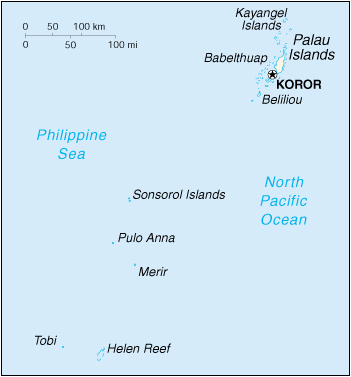

|
Palau | |
| Introduction Geography People Government Economy Communications Transportation Military Transnational Issues | ||
|  | ||
| Palau | Introduction | Top of Page |
| Background: | After three decades as part of the UN Trust Territory of the Pacific under US administration, this westernmost cluster of the Caroline Islands opted for independent status in 1978 rather than join the Federated States of Micronesia. A Compact of Free Association with the US was approved in 1986, but not ratified until 1993. It entered into force the following year when the islands gained their independence. |
| Palau | Geography | Top of Page |
| Location: | Oceania, group of islands in the North Pacific Ocean, southeast of the Philippines |
| Geographic coordinates: | 7 30 N, 134 30 E |
| Map references: | Oceania |
| Area: |
total:
458 sq km
land: 458 sq km water: 0 sq km |
| Area - comparative: | slightly more than 2.5 times the size of Washington, DC |
| Land boundaries: | 0 km |
| Coastline: | 1,519 km |
| Maritime claims: |
continental shelf:
200-m depth or to the depth of exploitation
exclusive fishing zone: 12 NM extended fishing zone: 200 NM territorial sea: 3 NM |
| Climate: | wet season May to November; hot and humid |
| Terrain: | varying geologically from the high, mountainous main island of Babelthuap to low, coral islands usually fringed by large barrier reefs |
| Elevation extremes: |
lowest point:
Pacific Ocean 0 m
highest point: Mount Ngerchelchauus 242 m |
| Natural resources: | forests, minerals (especially gold), marine products, deep-seabed minerals |
| Land use: |
arable land:
NA%
permanent crops: NA% permanent pastures: NA% forests and woodland: NA% other: NA% |
| Irrigated land: | NA sq km |
| Natural hazards: | typhoons (June to December) |
| Environment - current issues: | inadequate facilities for disposal of solid waste; threats to the marine ecosystem from sand and coral dredging, illegal fishing practices, and overfishing |
| Environment - international agreements: |
party to:
Biodiversity, Climate Change, Climate Change-Kyoto Protocol, Desertification, Law of the Sea
signed, but not ratified: none of the selected agreements |
| Geography - note: | includes World War II battleground of Beliliou (Peleliu) and world-famous rock islands; archipelago of six island groups totaling over 200 islands in the Caroline chain |
| Palau | People | Top of Page |
| Population: | 19,092 (July 2001 est.) |
| Age structure: |
0-14 years:
26.88% (male 2,641; female 2,491)
15-64 years: 68.46% (male 7,128; female 5,943) 65 years and over: 4.66% (male 420; female 469) (2001 est.) |
| Population growth rate: | 1.69% (2001 est.) |
| Birth rate: | 19.64 births/1,000 population (2001 est.) |
| Death rate: | 7.23 deaths/1,000 population (2001 est.) |
| Net migration rate: | 4.45 migrant(s)/1,000 population (2001 est.) |
| Sex ratio: |
at birth:
1.06 male(s)/female
under 15 years: 1.06 male(s)/female 15-64 years: 1.2 male(s)/female 65 years and over: 0.9 male(s)/female total population: 1.14 male(s)/female (2001 est.) |
| Infant mortality rate: | 16.67 deaths/1,000 live births (2001 est.) |
| Life expectancy at birth: |
total population:
68.89 years
male: 65.77 years female: 72.19 years (2001 est.) |
| Total fertility rate: | 2.47 children born/woman (2001 est.) |
| HIV/AIDS - adult prevalence rate: | NA% |
| HIV/AIDS - people living with HIV/AIDS: | NA |
| HIV/AIDS - deaths: | NA |
| Nationality: |
noun:
Palauan(s)
adjective: Palauan |
| Ethnic groups: | Palauan (Micronesian with Malayan and Melanesian admixtures) 70%, Asian (mainly Filipinos, followed by Chinese, Taiwanese, and Vietnamese) 28%, white 2% (2000 est.) |
| Religions: | Christian (Catholics, Seventh-Day Adventists, Jehovah's Witnesses, the Assembly of God, the Liebenzell Mission, and Latter-Day Saints), Modekngei religion (one-third of the population observes this religion which is indigenous to Palau) |
| Languages: | English and Palauan official in all states except Sonsoral (Sonsorolese and English are official), Tobi (Tobi and English are official), and Angaur (Angaur, Japanese, and English are official) |
| Literacy: |
definition:
age 15 and over can read and write
total population: 92% male: 93% female: 90% (1980 est.) |
| Palau | Government | Top of Page |
| Country name: |
conventional long form:
Republic of Palau
conventional short form: Palau local long form: Beluu er a Belau local short form: Belau former: Palau District (Trust Territory of the Pacific Islands) |
| Government type: | constitutional government in free association with the US; the Compact of Free Association entered into force 1 October 1994 |
| Capital: | Koror; note - a new capital is being built about 20 km northeast of Koror |
| Administrative divisions: | 18 states; Aimeliik, Airai, Angaur, Hatobohei, Kayangel, Koror, Melekeok, Ngaraard, Ngarchelong, Ngardmau, Ngatpang, Ngchesar, Ngeremlengui, Ngiwal, Palau Island, Peleliu, Sonsoral, Tobi |
| Independence: | 1 October 1994 (from the US-administered UN Trusteeship) |
| National holiday: | Constitution Day, 9 July (1979) |
| Constitution: | 1 January 1981 |
| Legal system: | based on Trust Territory laws, acts of the legislature, municipal, common, and customary laws |
| Suffrage: | 18 years of age; universal |
| Executive branch: |
chief of state:
President Tommy Esang REMENGESAU Jr. (since 19 January 2001) and Vice President Sandra PIERANTOZZI (since 19 January 2001); note - the president is both the chief of state and head of government
head of government: President Tommy Esang REMENGESAU Jr. (since 19 January 2001) and Vice President Sandra PIERANTOZZI (since 19 January 2001); note - the president is both the chief of state and head of government cabinet: Cabinet elections: president and vice president elected on separate tickets by popular vote for four-year terms; election last held 7 November 2000 (next to be held NA November 2004) election results: Tommy Esang REMENGESAU Jr. elected president; percent of vote - Tommy Esang REMENGESAU Jr. 53%, Peter SUGIYAMA 46%; Sandra PIERANTOZZI elected vice president; percent of vote - Sandra PIERANTOZZI 52%, Alan SEID 45% |
| Legislative branch: |
bicameral Parliament or Olbiil Era Kelulau (OEK) consists of the Senate (16 seats; members elected by popular vote on a population basis to serve four-year terms) and the House of Delegates (16 seats; members elected by popular vote to serve four-year terms)
elections: Senate - last held 7 November 2000 (next to be held NA November 2004); House of Delegates - last held 7 November 2000 (next to be held NA November 2004) election results: Senate - percent of vote by party - NA%; seats by party - NA; House of Delegates - percent of vote by party - NA%; seats by party - NA |
| Judicial branch: | Supreme Court; National Court; Court of Common Pleas |
| Political parties and leaders: | Palau Nationalist Party [Johnson TORIBIONG]; Ta Belau Party [Kuniwo NAKAMURA] |
| Political pressure groups and leaders: | NA |
| International organization participation: | ACP, ESCAP, FAO, IBRD, ICAO, ICRM, IDA, IFC, IFRCS, IMF, IOC, Sparteca, SPC, SPF, UN, UNCTAD, UNESCO, WHO |
| Diplomatic representation in the US: |
chief of mission:
Ambassador Hersey KYOTA
chancery: 1150 18th Street NW, Suite 750, Washington, DC 20036 telephone: [1] (202) 452-6814 FAX: [1] (202) 452-6281 |
| Diplomatic representation from the US: |
chief of mission:
the Ambassador to the Philippines is accredited to Palau; Charge d'Affaires Allen E. NUGENT
embassy: address NA, Koror mailing address: P. O. Box 6028, Republic of Palau 96940 telephone: [680] 488-2920, 2990 FAX: [680] 488-2911 |
| Flag description: | light blue with a large yellow disk (representing the moon) shifted slightly to the hoist side |
| Palau | Economy | Top of Page |
| Economy - overview: | The economy consists primarily of subsistence agriculture and fishing. The government is the major employer of the work force, relying heavily on financial assistance from the US. The population enjoys a per capita income of twice that of the Philippines and much of Micronesia. Long-run prospects for the tourist sector have been greatly bolstered by the expansion of air travel in the Pacific and the rising prosperity of leading East Asian countries. |
| GDP: |
purchasing power parity - $129 million (1998 est.)
note: GDP numbers reflect US spending |
| GDP - real growth rate: | -1.4% (1998 est.) |
| GDP - per capita: | purchasing power parity - $7,100 (1998 est.) |
| GDP - composition by sector: |
agriculture:
NA%
industry: NA% services: NA% |
| Population below poverty line: | NA% |
| Household income or consumption by percentage share: |
lowest 10%:
NA%
highest 10%: NA% |
| Inflation rate (consumer prices): | NA% |
| Labor force: | 8,300 (1999) |
| Labor force - by occupation: | agriculture NA%, industry NA%, services NA% |
| Unemployment rate: | 2.3% (2000 est.) |
| Budget: |
revenues:
$57.7 million
expenditures: $80.8 million, including capital expenditures of $17.1 million (FY98/99 est.) |
| Industries: | tourism, craft items (from shell, wood, pearls), construction, garment making |
| Industrial production growth rate: | NA% |
| Agriculture - products: | coconuts, copra, cassava (tapioca), sweet potatoes |
| Exports: | $14.3 million (f.o.b., 1996) |
| Exports - commodities: | trochus (type of shellfish), tuna, copra, handicrafts |
| Exports - partners: | US, Japan |
| Imports: | $126 million (f.o.b., FY99/00) |
| Imports - commodities: | machinery and equipment, fuels, metals; foodstuffs |
| Imports - partners: | US |
| Debt - external: | $0 (FY99/00) |
| Economic aid - recipient: | $155.8 million (1995); note - the Compact of Free Association with the US, entered into after the end of the UN trusteeship on 1 October 1994, will provide Palau with up to $700 million in US aid over 15 years in return for furnishing military facilities |
| Currency: | US dollar (USD) |
| Currency code: | USD |
| Exchange rates: | the US dollar is used |
| Fiscal year: | 1 October - 30 September |
| Palau | Communications | Top of Page |
| Telephones - main lines in use: | 1,500 (1988) |
| Telephones - mobile cellular: | 0 (1988) |
| Telephone system: |
general assessment:
NA
domestic: NA international: satellite earth station - 1 Intelsat (Pacific Ocean) |
| Radio broadcast stations: | AM 1, FM 0, shortwave 1 (1998) |
| Radios: | 12,000 (1997) |
| Television broadcast stations: | 1 (1997) |
| Televisions: | 11,000 (1997) |
| Internet country code: | .pw |
| Internet Service Providers (ISPs): | NA |
| Palau | Transportation | Top of Page |
| Railways: | 0 km |
| Highways: |
total:
61 km
paved: 36 km unpaved: 25 km |
| Waterways: | none |
| Ports and harbors: | Koror |
| Merchant marine: | none (2000 est.) |
| Airports: | 3 (2000 est.) |
| Airports - with paved runways: |
total:
1
1,524 to 2,437 m: 1 (2000 est.) |
| Airports - with unpaved runways: |
total:
2
1,524 to 2,437 m: 2 (2000 est.) |
| Palau | Military | Top of Page |
| Military branches: | NA |
| Military expenditures - dollar figure: | $NA |
| Military expenditures - percent of GDP: | NA% |
| Military - note: | defense is the responsibility of the US; under a Compact of Free Association between Palau and the US, the US military is granted access to the islands for 50 years |
| Palau | Transnational Issues | Top of Page |
| Disputes - international: | none |
{kind=link}
{kind=link}